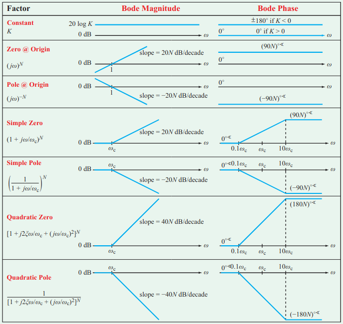

Filters
Table of Contents
1. Filters
Filters filter an input signal and allow certain frequencies through while rejecting others. Low pass filters are filters that allow low frequencies through and blocks high frequencies. Similarly, high pass filters allow high frequencies and blocks low frequencies. The band of frequencies that are allowed to pass is called the passband, and the band that is blocked is called the stopband. We can also create filters that allow a certain middle band of frequencies through (the bandpass filter) or block that middle band (the bandreject filter).
1.1. Transfer Functions
We can define a transfer function that describes the voltage response of a linear circuit like so:
\begin{align} H(\omega) = \frac{V_{\text{out}}(\omega)}{V_{\text{in}}(\omega)} \end{align}This function is the voltage transfer function, also referred to as voltage gain. Similar transfer functions can be defined for current, transfer impedance, and transfer admittance.
In any case, since the transfer function is always defined as the ratio of an input to an output, we can always think of it as equal to the output generated by the circuit in response to a unity input \(1 \angle 0^{\circ}\) with magnitude \(1\) and phase \(0^{\circ}\).
Usually, we care about the magnitude and phase of a transfer function:
\begin{align} M(\omega) &= |H(\omega)| \notag \\ \phi(\omega) &= \tan^{-1} \left(\frac{\text{Im}[H(\omega)]}{\text{Re}[H(\omega)]}\right) \notag \end{align}We define the corner frequency \(\omega_c\) as the angular frequency at when the magnitude of the transfer function is \(\frac{1}{\sqrt{2}}\) of its maximum passband value (e.g. magnitude at DC for low-pass filters):
\begin{align} \boxed{M(\omega_c) = \frac{M_0}{\sqrt{2}}} \end{align}Since power is \(P=\frac{V^2}{R}\), the transfer function for power is:
\begin{align} H_p(\omega) = \frac{P_{\text{out}}(\omega)}{P_{\text{in}}(\omega)} = \frac{V^2_{\text{out}}(\omega)}{V^2_{\text{in}}(\omega)} = H^2(\omega) \notag \end{align}Then, when \(M(\omega_c) = \frac{M(0)}{\sqrt{2}}\), \(M^2(\omega_c) = \frac{M^2(0)}{2}\), which means the corner frequency is also the frequency at which the circuit outputs half the input power. Since this is also defined as the frequency at which the circuit cuts off, the corner frequency is also referred to as the cutoff frequency for a filter.
2. Bode Plots
Bode plots plot the frequency response (magnitude and phase of the transfer function) of a system with respect to the angular frequency of the input signal. It is a plot of the dB-magnitude of a transfer function versus log-scale frequency.
For log frequency scales, each increment represents a power of \(10\). A decade is a range of frequencies for which the ratio of the highest to lowest frequency is \(10\). An octave is a range of frequencies for which the ratio of the highest to lowest frequency is \(2\).
For decibel scales, each increment is represented by the decibel. The decibel is defined as ten times the log base \(10\) of a power ratio. Then, a \(3 \text{ dB}\) increase is roughly equivalent to doubling the power, whereas a \(10 \text{ dB}\) increase represents a ten-fold increase in power. Since voltage-squared is proportional to power, bringing the square outside the logarithm yields the following equation for the dB-magnitude of the voltage transfer function:
\begin{align} \boxed{|H(\omega)|_{\text{dB}} = 20\log_{10}(|H(f)|)} \end{align}2.1. Poles and Zeroes
Given a function like
\begin{align} f(s) = \frac{(s-z_1)(s-z_2)\cdots}{(s-p_1)(s-p_2)\cdots} \notag \end{align}The zeroes are the values for which the function goes to \(0\) (e.g. \(z_1, z_2, \dots\)). The poles are the values for which the function goes to \(\infty\) (e.g \(p_1, p_2, \dots\)).
In the context of transfer functions, say we have a system composed of three cascaded filters \(V_{\text{out}} = A_1A_2A_3V_{\text{in}}\), then \(H(\omega)=A_1A_2A_3\). We can represent \(A_i=M_ie^{j\omega\phi_i}\), and then our transfer function is:
\begin{align} H(\omega)=Me^{j\omega\phi} \notag \end{align}where \(M=M_1M_2M_3\) and \(\phi=\phi_1+\phi_2+\phi_3\). The fact that the total phase shift is just the sum of each of the components makes it easy to simply plot each component and then consider its sum. But since for magnitude, we represent the gain in terms of decibels, we find that:
\begin{align} 20\log_{10}M &= 20\log_{10}(M_1M_2M_3) \notag \\ &= 20\log_{10}M_1 + 20\log_{10}M_2 + 10\log_{10}M_3 \notag \end{align}Thus, we can also add the Bode plots for the magnitude components together as well.
The following chart shows the Bode straight-line approximates for poles and zeroes:
